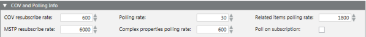

COV and Polling Info

The COV and PollingInfo expander contains the default values for data reporting. Usually, default values are optimal. However, you can change the default values if the network traffic is high.
Data reporting is done in two ways:
- Change of Status (COV) service. The BACnet Driver sends the BACnet device a subscription request. The BACnet device accepts the subscription, and sends the BACnet driver notifications when changes occur. The BACnet Driver must renew the subscription request at intervals.
- Polling. The BACnet Driver polls the BACnet device at intervals to check for changes.
If the COV service is not supported by the BACnet device or does not work due to network problems, polling is used instead.
COV and Polling Info | |
Item | Description |
COV resubscribe rate | Indicates the time interval (in seconds) at which the driver renews the COV subscription. |
MSTP resubscribe rate | Indicates the time interval (in seconds) at which the driver renews the COV subscription. |
Polling rate | Indicates the time interval (in seconds) at which the driver polls objects (if COV is not supported). |
Complex properties polling rate | Indicates the time interval (in seconds) at which the driver polls properties with large data values, for example the object list (if COV is not supported). |
Related items polling rate | Indicates the time interval (in seconds) at which the driver polls properties that reference other objects, to update the BACnet links provider (if COV is not supported). |
Poll on subscription | Check this box only if you have a slow device (MSTP) that does not quickly return a value after a subscription. |